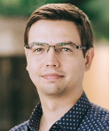

Dmitry Yudin
PhD (Candidate of Technical Sciences)
Head of Intelligent Transport Lab, MIPT
Leading Researcher, AIRI
Кандидат технических наук
Заведующий лабораторией интеллектуального транспорта МФТИ
Ведущий научный сотрудник AIRI
Email: yudin.da@mipt.ru
GitHub: github.com/yuddim
ORCID: 0000-0002-1407-2633
Google Scholar: Profile

Biography
Researcher in multimodal 3D mapping, SLAM, embodied AI and intelligent transport systems. Author of 100+ publications, PI of national and industrial AI projects.
Специалист в области мультимодального 3D-картирования, SLAM, embodied AI и интеллектуального транспорта. Автор более 100 научных публикаций, руководитель национальных и индустриальных проектов по ИИ.
Selected Publications (2024–2025)
M3DMap: Object-Aware Multimodal 3D Mapping for Dynamic Environments
Optical Memory and Neural Networks, 2025
Optical Memory and Neural Networks, 2025
3DGraphLLM: Combining Semantic Graphs and Large Language Models for 3D Scene Understanding
ICCV 2025
ICCV 2025
Full publication list: Google Scholar
Grants & Projects
- 2025 – AI Research Center Grant (HD multimodal mapping)
- 2021–2023 – Russian Science Foundation Grant
- 2022–2025 – Open multimodal neural localization library (CodeAI)
- Industrial SLAM & Robotics projects
- 2025 – Грант центра ИИ (HD-картирование)
- 2021–2023 – Грант РНФ
- 2022–2025 – Открытая библиотека нейросетевой локализации
- Индустриальные проекты по SLAM и робототехнике
Awards
- 2024 – UpGreat Level 5 Autonomous Truck Winner
- 2023 – Governor’s Award (Moscow Region)
- 2017 – IEEE Young Scientist Paper Award
Academic Service
- Vice-President, Russian Neural Network Society
- Editor, Optical Memory and Neural Networks Journal
- Deputy Chair, Neuroinformatics Conference